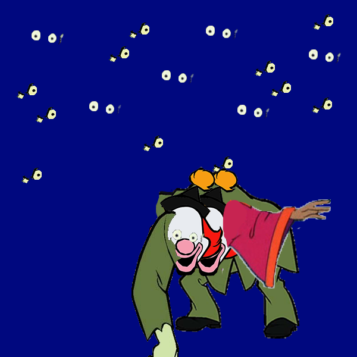

by Sosofarsosofie
The idea behind my program is “Make your own scooby doo villain.” Using parts of several different villains, people are able to make scarier monsters from monsters from their childhood. There are also stickers of the scooby doo as well.
char currentkey='1'; PImage b; void setup() { size(600, 600); background(0,8,127); smooth(); } void draw() { // triggering the clear_print function if(keyPressed) { clear_print(); } // triggering the newkeychoice if(mousePressed) { // testbox(); newkeyChoice(); } } void testbox() { fill(0); rect(mouseX,mouseY,100,100); rect(100,100,100,100); rect(34,56,100,100); rect(34,20,100,100); } void newkeyChoice() { if (key == '1' ) { stroke(0); line(mouseX, mouseY, pmouseX, pmouseY); } else if (key == '2') { stroke(200); line(mouseX, mouseY, pmouseX, pmouseY); } else if (key == '3') { stroke(300,100,0,80); line(mouseX, mouseY, pmouseX, pmouseY); } else if (key == '4') { strokeWeight(15); stroke(0,8,127); line(mouseX, mouseY, pmouseX, pmouseY); } else if (key == 'g') { b = loadImage("http://dma.sjsu.edu/art74.04/scocke/img/heart.png"); image(b, mouseX, mouseY); } else if (key =='s'){ b = loadImage("http://dma.sjsu.edu/art74.04/scocke/img/scooby_shaggy.png"); image(b,mouseX,mouseY); } else if (key =='d'){ b = loadImage("http://dma.sjsu.edu/art74.04/scocke/img/daphne.png"); image(b,mouseX,mouseY); } else if (key =='f'){ b = loadImage("http://dma.sjsu.edu/art74.04/scocke/img/fred.png"); image(b,mouseX,mouseY); } else if (key =='v'){ b = loadImage("http://dma.sjsu.edu/art74.04/scocke/img/velma.png"); image(b,mouseX,mouseY); } else if (key =='m'){ b = loadImage("http://dma.sjsu.edu/art74.04/scocke/img/Miner_49erhead.png"); image(b,mouseX,mouseY); }else if (key =='a'){ b = loadImage("http://dma.sjsu.edu/art74.04/scocke/img/clown_head.png"); image(b,mouseX,mouseY); }else if (key =='b'){ b = loadImage("http://dma.sjsu.edu/art74.04/scocke/img/Miner_49ertorso.png"); image(b,mouseX,mouseY); }else if (key =='c'){ b = loadImage("http://dma.sjsu.edu/art74.04/scocke/img/Miner_49erlegs.png"); image(b,mouseX,mouseY); }else if (key =='q'){ b = loadImage("http://dma.sjsu.edu/art74.04/scocke/img/scooby_rightarm.png"); image(b,mouseX,mouseY); }else if (key =='e'){ b = loadImage("http://dma.sjsu.edu/art74.04/scocke/img/scooby_villiantorso.png"); image(b,mouseX,mouseY); }else if (key =='l'){ b = loadImage("http://dma.sjsu.edu/art74.04/scocke/img/scooby_eyes.png"); image(b,mouseX,mouseY); }else if (key =='t'){ b = loadImage("http://dma.sjsu.edu/art74.04/scocke/img/scooby_leftarm.png"); image(b,mouseX,mouseY); }else if (key =='y'){ b = loadImage("http://dma.sjsu.edu/art74.04/scocke/img/scooby_rightarm.png"); image(b,mouseX,mouseY); }else if (key =='w'){ b = loadImage("http://dma.sjsu.edu/art74.04/scocke/img/scooby_2eyes.png"); image(b,mouseX,mouseY); }else if (key =='5'){ b = loadImage("http://dma.sjsu.edu/art74.04/scocke/img/creep_torso.png"); image(b,mouseX,mouseY); }else if (key =='6'){ b = loadImage("http://dma.sjsu.edu/art74.04/scocke/img/creep_leftarm.png"); image(b,mouseX,mouseY); }else if (key =='7'){ b = loadImage("http://dma.sjsu.edu/art74.04/scocke/img/creep_rightarm.png"); image(b,mouseX,mouseY); }else if (key =='8'){ b = loadImage("http://dma.sjsu.edu/art74.04/scocke/img/scooby_villian2.png"); image(b,mouseX,mouseY); }else if (key =='9'){ b = loadImage("http://dma.sjsu.edu/art74.04/scocke/img/scooby_1head.png"); image(b,mouseX,mouseY); }else if (key =='0'){ b = loadImage("http://dma.sjsu.edu/art74.04/scocke/img/scooby_1rightarm.png"); image(b,mouseX,mouseY); } char currentkey = key; } void clear_print() { // these 2 options let you choose between clearing the background // and saveing the current image as a file. if (key == 'x' || key == 'X') { background(0,8,127); } else if (key == 'p' || key == 'P') { saveFrame("images/00sd_m-####.png"); //this will save the name as the intials and a millis counting number. // it will always be larger in value then the last one. } }